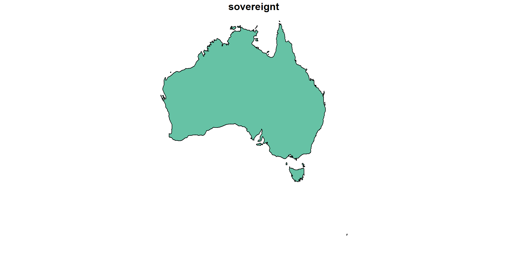
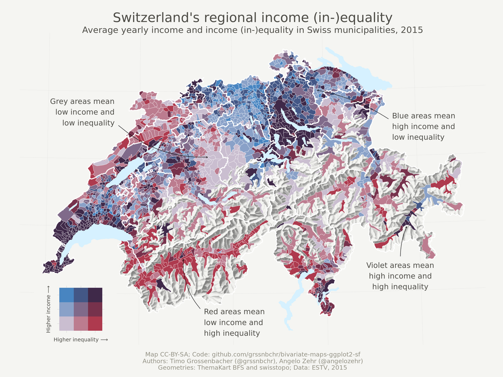

Spatial Data and Mapping in R
Maryna Shedzko
ResearchIT, University of Manchester
What this talk WILL cover
- Spatial data and its types (vector, raster)
- What does it look like in R
- How to create spatial objects
- How to put them on a map
- How to make the map look pretty
What this talk will NOT cover
- spatial manipulation
- coordinate reference systems
- spatial analysis, statistics
Spatial Data
Spatial objects would typically have information about:
- Coordinates
- Geometry types
- Attributes
- Coordinate Reference System
- Topological Information
There are two main spatial data models - Vector and Raster
Vector Model
- Describes location and shape of objects with points, lines and polygons
- Object-oriented

Sketches of the main simple feature geometry types
Raster Model
- Focuses on spatial distribution
- Grid structure

Raster. Source: National Ecological Observatory Network (NEON)
Vector Data. Simple Features
Simple feature collection with 6 features and 5 fields
Geometry type: MULTIPOLYGON
Dimension: XY
Bounding box: xmin: -73.36621 ymin: -22.40205 xmax: 109.4449 ymax: 41.9062
Geodetic CRS: WGS 84
fclass_it fclass_nl fclass_se fclass_bd fclass_ua
1 <NA> <NA> <NA> <NA> <NA>
2 <NA> <NA> <NA> <NA> <NA>
3 <NA> <NA> <NA> <NA> <NA>
4 <NA> <NA> <NA> <NA> <NA>
5 <NA> <NA> <NA> <NA> <NA>
6 <NA> <NA> <NA> <NA> <NA>
geom
1 MULTIPOLYGON (((31.28789 -2...
2 MULTIPOLYGON (((30.39609 -1...
3 MULTIPOLYGON (((53.08564 16...
4 MULTIPOLYGON (((104.064 10....
5 MULTIPOLYGON (((-60.82119 9...
6 MULTIPOLYGON (((12.43916 41...Vector Data. Simple Features
sf(simple features)sfc(simple features geometry column)sfg(simple feature geometry)
Creating Spatial Objects
Changing geometry types

Changing geometry types
Changing geometry types
Basic Visualization
Basic Visualization
Basic Visualization
Basic Visualization
Basic Visualization
Basic Visualization.
Basic Visualization. Layers!
plot(st_geometry(aus_sf), lwd = 0.5, border = 'gray', main = "Australia with Top 5 Largest Cities")
plot(st_geometry(oceans), col = 'steelblue1', border = 'steelblue', add = TRUE)
plot(st_geometry(aus_cities), col = 'black', pch = 19, cex = 1, add = TRUE)
text(aus_cities$longitude, aus_cities$latitude,
labels = aus_cities$name, cex = 0.6, pos = 1, offset = 0.2)Raster Spatial Information
Because of the regular grid structure of raster data allows the coordinates of the pixels to be calculated based on their indices
| Parameter | Purpose |
|---|---|
| NCOLS | Number of columns |
| NROWS | Number of rows |
| XLLCENTER | Coordinates of the center of the lower-left pixel |
| YLLCENTER | Coordinates of the center of the lower-left pixel |
| CELLSIZE | Size of each pixel |
Import and Visualization
Customizing the Color Palette
Cropping a Raster
# Filter for Australia from the countries dataset
australia <- countries |> filter(name == "Australia") |> st_as_sf()
# Crop the elevation data for Australia
elev_country <- elevation_st[australia]
# Plot the cropped elevation data with the terrain.colors palette
plot(elev_country, col = terrain.colors(6))Layers!
plot(st_geometry(australia), lwd = 0.5, border = 'gray', main = "Australia with Top 5 Largest Cities") # Custom title
plot(oceans, col = 'steelblue1', border = 'steelblue', add = TRUE)
plot(elev_country, col = terrain.colors(6), add = TRUE, main = NULL)
plot(aus_cities, col = 'black', pch = 19, cex = 1, add = TRUE)
text(aus_cities$longitude, aus_cities$latitude,labels = aus_cities$name, cex = 0.6, pos = 1, offset = 0.2)
Scatter Plot vs. Map in ggplot2
Customising maps with ggplot2
# Cut the elevation data into bins (groups?) based on the breaks
countries$pop_class <- cut(countries$pop_est,
breaks = c(0, 1e6, 10e6, 50e6, 200e6, 1e9, Inf),
labels = c("<1M", "1-10M", "10-50M", "50-200M", "200M-1B", ">1B"),
include.lowest = TRUE)
ggplot(data = countries) +
geom_sf(aes(fill = pop_class), color = NA) +
scale_fill_manual(values = c("<1M" = "#ffffff","1-10M" = "#fee5d9", "10-50M" = "#fcae91", "50-200M" = "#fb6a4a","200M-1B" = "#de2d26",
">1B" = "#a50f15" # White to Dark Red
)) +
labs(title = "World Map by Population",fill = "Population Class",caption = "Data Source: Natural Earth") +
coord_sf(expand = FALSE) Customising maps with ggplot2
Example: Elevation Map
# Define the breaks and colors
brks <- c(-12000, -5000, -2500, -1000, -200, 0, 200, 500, 1000, 2000, 4000, 8000)
clrs <- c(
"steelblue4", "steelblue3", "steelblue2", "steelblue1", "lightskyblue1",
"darkseagreen", "lightgoldenrod1", "darkgoldenrod1", "darkorange",
"coral2", "firebrick3"
)
# Cut the elevation data into bins based on the breaks
elevation_st$elevation_binned <- cut(
elevation_st[[1]],
breaks = brks,
include.lowest = TRUE
)
ggplot() +
geom_stars(data = elevation_st, aes(fill = elevation_binned)) +
scale_fill_manual(
values = clrs,
name = "Elevation (m)",
labels = c(" < -5000", "-5000 - -2500","-2500 - -1000", "-1000-200", "-200-0", "0 - 200","200 - 500","500-1000","1000 - 2000","2000 - 4000","> 4000")
) +
labs(
caption = "Data Source: Natural Earth"
) +
coord_sf(expand = FALSE) + # Keep lat/lon ticks
theme_minimal() + # Minimal theme with a clean design
theme(
axis.title = element_blank(),
axis.text = element_blank(),
plot.title = element_text(size = 16, face = "bold", hjust = 0.5),
plot.caption = element_text(size = 10, hjust = 1)
)Example: Elevation Map
Example: Annual Precipitation Map
geodata_path <- file.path(getwd(), "data")
# Load the WorldClim precipitation data
prec <- worldclim_global(var = "prec", res = 10, path = geodata_path)
prec <- prec$wc2.1_10m_prec_01 |> st_as_stars()
# Define breaks for precipitation (in mm) and custom blue color palette
brks <- c(0, 50, 100, 200, 500, 1000)
clrs <- colorRampPalette(c('white', 'steelblue4'))
# Convert the precipitation data to a factor with levels corresponding to the breaks
prec_factor <- cut(prec, breaks = brks, include.lowest = TRUE, labels = c("0-50", "50-100", "100-200", "200-500", "500-1000")) |> st_as_stars()
# Create the plot
ggplot() +
geom_stars(data = prec_factor) + # Use the factorized data for fill
scale_fill_manual(
values = clrs(5),
name = "Precipitation (mm)",
na.value = "transparent"
) +
labs(
caption = "Data Source: WorldClim"
) +
# Overlay country boundaries
geom_sf(data = oceans, fill = "lightblue", color = "steelblue", size = 0.3) +
coord_sf(expand = FALSE) + # Keep lat/lon ticks
theme_minimal(base_size = 14) + # Minimal theme with a clean design
theme(
legend.title = element_text(size = 12),
legend.text = element_text(size = 10),
plot.title = element_text(size = 16, face = "bold", hjust = 0.5),
plot.subtitle = element_text(size = 12, hjust = 0.5),
plot.caption = element_text(size = 10, hjust = 1),
axis.title = element_blank(),
axis.text = element_blank()
)Example: Annual Precipitation Map
Going Beyond
Map of Switzerland using ggplot2 by Timo Grossenbacher
Customizing maps with tmap
library(tmap)
# Define breaks for precipitation (in mm) and custom blue color palette
brks <- c(0, 50, 100, 200, 500, 1000)
clrs <- colorRampPalette(c('white', 'steelblue4'))(length(brks) - 1)
# Create the tmap plot
tm_shape(prec_factor) +
tm_raster(col.scale = tm_scale(values = clrs, breaks = brks),
col.legend = tm_legend(title = "Precipitation (mm)", labels = levels(prec_factor[[1]]))) +
tm_shape(oceans) +
tm_polygons(col = "lightblue", border.col = "steelblue") +
tm_scalebar(position = c("right", "bottom")) + # Updated function name
tm_compass(position = c("left", "top"), size = 2) +
tm_graticules(col = "steelblue3", alpha = 0.3) +
tm_layout(
legend.position = c("LEFT", "BOTTOM"),
legend.frame = FALSE,
frame = FALSE,
bg.color = "gray95")Customizing maps with tmap
Join the R User Group!
RUM space on CADIR (MS Teams): https://bit.ly/RUserGroup